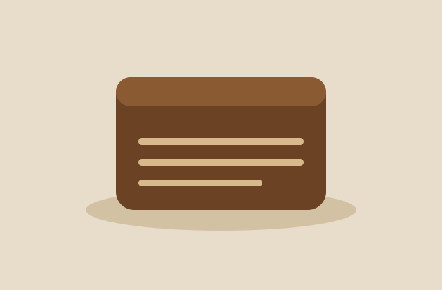

Country sourdough
Stone-milled wheat, a 26-hour ferment, and a crust that talks back.
Est. 2014 · Bermondsey
Long-fermented loaves, shaped by hand and baked before the light comes up. We mill our own rye and keep the same starter we began with.
See the counter
Stone-milled wheat, a 26-hour ferment, and a crust that talks back.

Dense, dark, and slightly sour. Good with butter, better with cheese.

Laminated over three days. We make eighty and they are gone by ten.
One note a week: what came out of the oven, what we are testing next, and the occasional recipe. No noise.